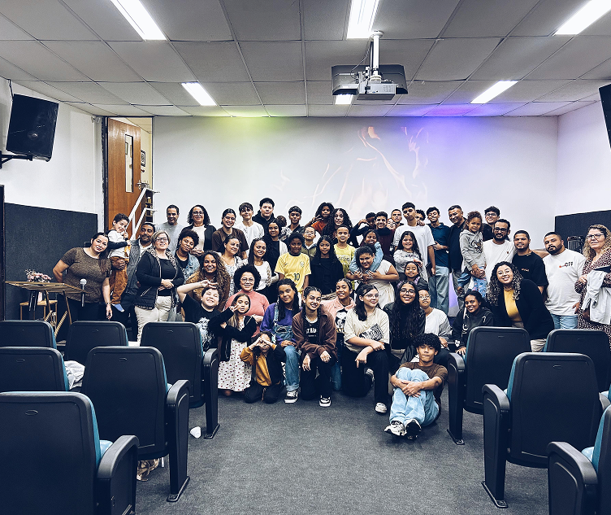

A IBEN Igreja Batista no Engenho Novo é uma comunidade cristã comprometida em anunciar o evangelho de Jesus Cristo, formar discípulos e servir à sociedade com amor e dedicação. Nossa igreja nasceu com o propósito de ser um lugar onde pessoas e famílias possam encontrar esperança, restauração e crescimento espiritual através da Palavra de Deus. Acreditamos que a igreja é mais do que um prédio ou uma reunião semanal; somos uma família unida pela fé, caminhando juntos em direção ao propósito que Deus tem para cada vida. Por isso, valorizamos a comunhão, o cuidado mútuo, o discipulado e o serviço ao próximo, criando um ambiente acolhedor para crianças, jovens, adultos e idosos. Em nossos cultos, buscamos adorar a Deus com excelência, ensinar as Escrituras de forma clara e proporcionar experiências que fortaleçam a fé e aproximem as pessoas de Cristo. Além disso, desenvolvemos ministérios e atividades voltados para o crescimento espiritual, o fortalecimento das famílias e o impacto positivo em nossa comunidade. Nossa missão é levar a mensagem de salvação a todos, demonstrando o amor de Deus por meio de atitudes práticas e de uma vida transformada pelo evangelho. Queremos ser uma igreja relevante para a sociedade, sem abrir mão dos princípios bíblicos que fundamentam nossa fé. Se você está procurando um lugar para conhecer mais sobre Deus, construir amizades sinceras, desenvolver seus dons e viver uma caminhada cristã autêntica, a IBEN tem as portas abertas para receber você e sua família. Aqui, cada pessoa é importante e tem a oportunidade de crescer, servir e fazer parte daquilo que Deus está realizando em nossa geração.
📍 Barueri - SP
Intercessão
19:00A Forja
19:30Culto de Oração
20:00Celula de jovems
19:00EBD e culto de noite
19:00
Culto dos Adolescentes TEMA: Envolvidos ou Comprometidos
19:00